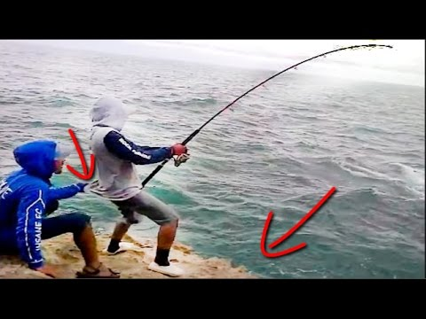

Outdoors Adventures
Camping

Fishing
Hiking

Rock climbing

Camping
Camping describes a range of activities and approaches to outdoor accommodation. Survivalist campers set off with as little as possible to get by, whereas recreational vehicle travelers arrive equipped with their own electricity, heat, and patio furniture. Camping may be combined with hiking, as in backpacking, and is often enjoyed in conjunction with other outdoor activities such as canoeing, climbing, fishing, and hunting.
There is no universally held definition of what is and what is not camping. Fundamentally, it reflects a combination of intent and the nature of activities involved. A children's summer camp with dining hall meals and bunkhouse accommodations may have "camp" in its name but fails to reflect the spirit and form of "camping" as it is broadly understood. Similarly, a homeless person's lifestyle may involve many common camping activities, such as sleeping out and preparing meals over a fire, but fails to reflect the elective nature and pursuit of spirit rejuvenation that are integral aspect of camping. Likewise, cultures with itinerant lifestyles or lack of permanent dwellings cannot be said to be "camping", it is just their way of life.
Some camping tips
Protect your toilet paper.Create a makeshift lantern.Create a makeshift music speaker.Keep your clothes warm.Use Doritos as tinder.Conserve (and don’t lose) soap.Bring quick and dirty firestarters.
Fishing
Fishing is the activity of trying to catch fish. Fish are normally caught in the wild. Techniques for catching fish include hand gathering, spearing, netting, angling and trapping. Fishing may include catching aquatic animals other than fish, such as molluscs, cephalopods, crustaceans, and echinoderms. The term is not normally applied to catching farmed fish, or to aquatic mammals, such as whales where the term whaling is more appropriate.
According to the United Nations FAO statistics, the total number of commercial fishermen and fish farmers is estimated to be 38 million. Fisheries and aquaculture provide direct and indirect employment to over 500 million people in developing countries.[1] In 2005, the worldwide per capita consumption of fish captured from wild fisheries was 14.4 kilograms, with an additional 7.4 kilograms harvested from fish farms.[2] In addition to providing food, modern fishing is also a recreational pastime
Some fishing tips
Mark Up Your Soft Baits.Stow Snaps And Swivels. Clip Your Trebles.Cut Down on Tangles.Dress-Up your Jigs.Sock It to Short Biters.Get a Grip on Eels.Stop on Top.Cripple Your Baitfish
Hiking
Hiking is the preferred term, in Canada and the United States, for a long, vigorous walk, usually on trails (footpaths), in the countryside, while the word walking is used for shorter, particularly urban walks. On the other hand, in the United Kingdom, and the Republic of Ireland, the word "walking" is acceptable to describe all forms of walking, whether it is a walk in the park or backpacking in the Alps. The word hiking is also often used in the UK, along with rambling (a slightly old-fashioned term), hillwalking, and fell walking (a term mostly used for hillwalking in northern England). The term bushwalking is endemic to Australia, having been adopted by the Sydney Bush Walkers club in 1927.[1] In New Zealand a long, vigorous walk or hike is called tramping.[2] It is a popular activity with numerous hiking organizations worldwide, and studies suggest that all forms of walking have health benefits.
The equipment required for hiking depends on the length of the hike, but day hikers generally carry at least water, food, a map, and rain-proof gear.[5] Hikers usually wear sturdy hiking boots for mountain walking and backpacking, as protection from the rough terrain, as well as providing increased stability.[5] The Mountaineers club recommends a list of "Ten Essentials" equipment for hiking, including a compass, a trekking pole, sunglasses, sunscreen, a flashlight, a first aid kit, a fire starter, and a knife.[25] Other groups recommend items such as hat, gloves, insect repellent, and an emergency blanket.[26] A GPS navigation device can also be helpful and route cards may be used as a guide.
Some hiking tips
Find a Group or Club to Hike With.Hike once a Week at a Local Park.Learn to Hydrate Properly.Carry the 10 Essentials.Find Comfortable Hiking Footwear.Develop Your Layering System.Leave a Trip Plan with a Trusted Friend or Relative.Learn How to Read a Topographic Map.Learn by Imitation.Volunteer to do Trail Work
Rock climbing
Rock climbing is an activity in which participants climb up, down or across natural rock formations or artificial rock walls. The goal is to reach the summit of a formation or the endpoint of a usually pre-defined route without falling. Due to the length and extended endurance required and because accidents are more likely to happen on the descent than the ascent, rock climbers do not usually climb back down the route. It is very rare for a climber to downclimb, especially on the larger multiple pitches (class III- IV and /or multi-day grades IV-VI climbs). Professional rock climbing competitions have the objectives of either completing the route in the quickest possible time or attaining the farthest point on an increasingly difficult route. Scrambling, another activity involving the scaling of hills and similar formations, is similar to rock climbing. However, rock climbing is generally differentiated by its sustained use of hands to support the climber's weight as well as to provide balance.
Rock climbing is a physically and mentally demanding sport, one that often tests a climber's strength, endurance, agility and balance along with mental control. It can be a dangerous activity and knowledge of proper climbing techniques and use of specialized climbing equipment is crucial for the safe completion of routes. Because of the wide range and variety of rock formations around the world, rock climbing has been separated into several different styles and sub-disciplines.
Some rock climbing tips
CLIMB WHENEVER YOU CAN.TAKE AN INTRO TO CLIMBING COURSE.FIND A MENTOR.CONSIDER SETTING PERSONAL GOALS.START A CLIMBING JOURNAL.MAKE A LIST OF PLACES YOU WOULD LOVE TO CLIMB